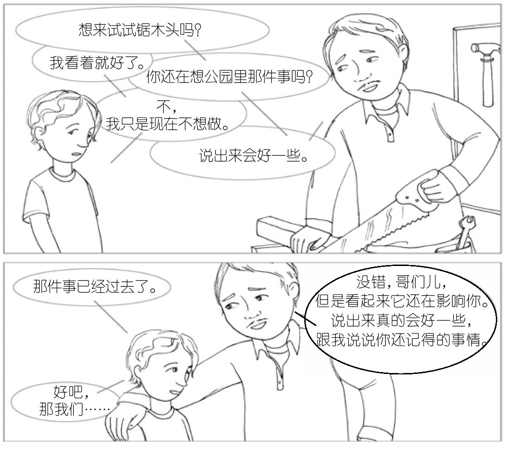
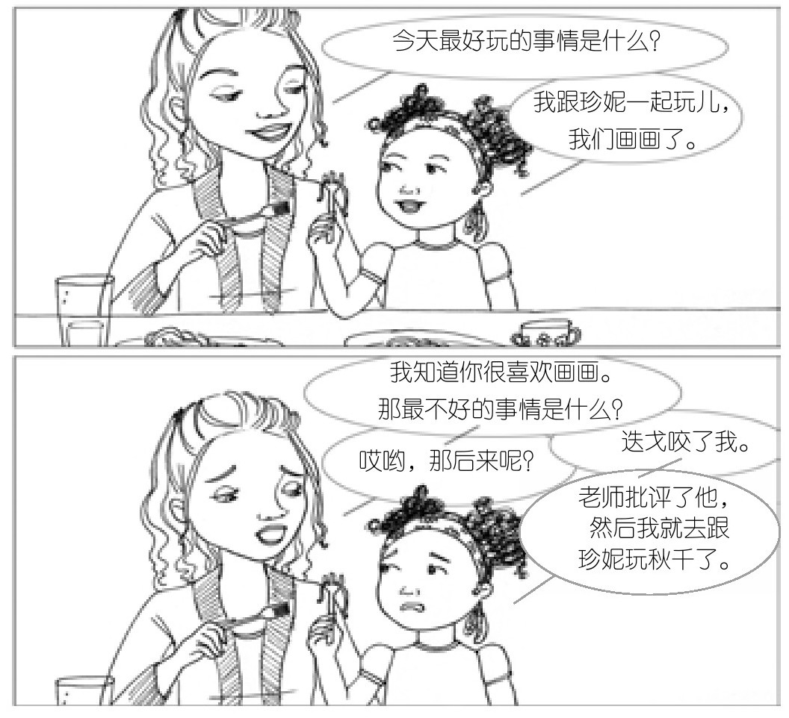

04b · 大事用遥控器，小事用回放键
上一篇讲了记忆的底层——内隐记忆没有时间标签，海马体是拼图高手。这篇是西格尔给的两个工具。一个用在伤疤上，一个用在每一天。
第6法：思维遥控器
西格尔给了孩子一个比喻：你手里有一个遥控器。你的某一段难受的记忆就是一段视频——你可以暂停、倒带、快进。
大卫的 10 岁儿子伊莱突然不肯参加松木车大赛。以前这是他每年冬天最兴奋的事——和爸爸一起把一块松木削成形、打磨、上漆。但今年，他连工具间都不肯靠近，尤其是有刀片的工具。他自己不知道为什么。
几个月前，伊莱把随身小折刀带去公园和朋友雷恩玩。雷恩削树根时刀子穿透树根扎到腿——血、救护车、缝针。两家当晚让两个孩子坐下来谈了整件事，看起来都没事了。
但伊莱的内隐记忆没有。刀片、木屑、红色的血——碎片散在脑子里，没有时间。每次靠近工具，身体先退了一步。意识什么都不知道。
大卫把他叫到花园。工具已经摆好了。伊莱一看到电锯就睁大了眼睛，身体僵了一瞬，然后故作镇定："爸爸，我今年不想参加松木车大赛了。"
大卫用最温柔的声音说："我知道。而且我想我也知道为什么。"
伊莱否认——"我只是最近学校很忙。"但大卫没退。他教伊莱想象自己手里有一个遥控器，然后开始帮他"播放"那天在公园的记忆。
暂停。 讲到"雷恩捡起树根开始切"——"暂停。"伊莱小声说。大卫停了。没有说"没关系继续说"，没有绕过去。一个 10 岁的孩子在自己的脑子里喊了停——而他的爸爸尊重了这个停。这是整个方法里最重要的部分：不是那些按钮，是"你在旁边，你没有推他"。
快进。 "那我们快进到医院的部分？""爸爸。""快进到雷恩回家的部分？""好吧。"——绕过最痛的画面，先看结局。两个朋友重新见面了，雷恩不生气，两家父母都不怪他。大脑最需要的信息是"结局是好的"——但痛苦会把结局遮住。
倒带。 看完结局，回到暂停的地方。这一次画面没那么可怕了——因为已经看到了结局。伊莱又按了几次暂停，每次多走一小段。最后他看完了全部。坐在花园里，肩膀松了，声音里的紧张消失了。
几周后，他和爸爸造了最好的松木车，取名"谁敢来挑战"。

遥控器不是消除痛苦。是帮海马体把碎片拼成有开头、有中间、有结局的故事。 在那之前他们是最好的朋友，在那之后他们还是。血是真实的，恐惧是真实的——但它们是一个完整故事里的一部分，不是一个反复播放的 3 秒片段。
不需要每次都用。孩子不想说时，不推。遥控器最有用的部分甚至不是按钮——是"你坐在旁边"。
第7法：提问和鼓励——"记得去记住"
遥控器对付的是已经卡在身体里的碎片。但西格尔说，记忆整合不只是灾后重建——它应该是日常。
第二个方法简单到只有五个字："记得去记住。"
每天一个固定的时间——睡前、晚饭、接他回家的车上——问他一个能启动海马体的问题。不是"今天怎么样"——大脑不回放"怎么样"。是能帮他按下回放键的问题：
"今天有什么好玩的事？"
"今天有没有一件事，一开始不开心、后来又好了？"
"今天你对自己最满意的是什么？"
每一次，海马体都在练习同一件事：把今天散落的碎片——操场上摔了一跤、午餐吃到了喜欢的布丁、画画时旁边小朋友哭了——拼成一个有时间顺序的故事。孩子两三岁时，他的答案可能把前天的事跟今天混在一起。不重要。重要的是他把感受变成了语言。 这个能力不是天生的，是每一次小小的回放练出来的。

你在 03 章 Q3 末尾写了一句——"教他识别情绪，一起去做，做得挺好。"你已经在做第7法了。每一次你帮他把"说不清楚的那种不舒服"变成"你感到很生气，对吗"，他的海马体就在工作。情绪有了名字，碎片有了标签。等到真正的大事来——被朋友伤害、面对一次失败、失去一个重要的人——他的大脑不是空白的。他有工具。
一条线
遥控器用在大事——那次溺水、那次被吼、在幼儿园被推倒。碎片散在身体里开了自动循环 → 暂停、倒带、快进 → 帮他拼成完整故事。
"记得去记住"用在每一天——睡前五分钟、晚饭桌上、回家路上。反复邀请海马体把今天变成语言。
小事重复练，大事来了有路可走。最终不是他永远需要你的遥控器。是他学会在自己脑子里按——被朋友背叛时按下暂停："等一下，我在重放什么？"被工作压垮时按下倒带："在那之前呢？我没有成功过吗？"失恋时按下快进："我不会永远卡在这里。"
西格尔说：每一次回忆都是一次重新编辑的机会。 第6法和第7法，就是教孩子当自己记忆的编辑。
这一章的核心，三句话
-
你有两套记忆。一套你知道自己在回忆，另一套你不知道。 内隐记忆没有时间标签——它让你以为"我现在很生气"，其实你是在重新经历一件很久以前的事。把它从暗处拉到明处——把身体感觉变成一个能讲出来的故事——它就失去了无声劫持你的能力。
-
记忆不是回放，是每一次都在重新组装。 这意味着每次回忆都是一次编辑的机会。第6法"思维遥控器"让一个孩子在暂停、快进、倒带之间，发现痛苦只是故事的一部分——前面有快乐，后面有修复。碎片被海马体拼成完整叙事之后，地雷变成了记忆。
-
"记得去记住"——日常的整合练习。 每天一个能启动海马体的问题。不是"今天怎么样"，是能让他按下回放键的句子。小事反复练，等大事来了，他的大脑不是空的。
下一篇，西格尔带你走进全书最核心的模型——觉知之轮。 你的内心是一个车轮。中心是觉察的本源，外围是你感受到的一切。愤怒来的时候，你不是那个愤怒——你是那个注意到愤怒的人。
学习反馈
在飞书中回复本条消息，填写你的答复。